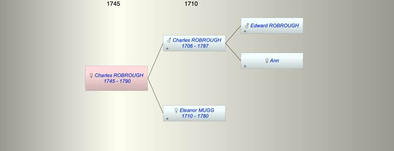

| [Index] |
| Charles ROBROUGH (1745 - 1790) |
|  |
| b. 1745 |
| d. 1790 at Southwark aged 45 |
| Parents: |
| Charles ROBROUGH (1706 - 1787) |
| Eleanor MUGG (1710 - 1780) |
| Siblings (4): |
| Anna Maria ROBROUGH (1738 - 1800) |
| Mary ROBROUGH (1740 - 1776) |
| Rebecca ROBROUGH (1743 - 1808) |
| Samuel ROBROUGH (1747 - 1748) |
| Events in Charles ROBROUGH (1745 - 1790)'s life | |||||
| Date | Age | Event | Place | Notes | Src |
| 1745 | Charles ROBROUGH was born | ||||
| Feb 1780 | 35 | Death of mother Eleanor MUGG (aged 70) | Southwark | Note 1 | |
| 1787 | 42 | Death of father Charles ROBROUGH (aged 81) | Note 2 | ||
| 1790 | 45 | Charles ROBROUGH died | Southwark | Note 3 | |
| Personal Notes: |
| 1776 made Freeman of City of London born 1745 sworn by William Curling fishmonger, John Curling merchant Taylor |
| Created on a Mac™ using iFamily for Mac™ on 8 Oct 2023 |